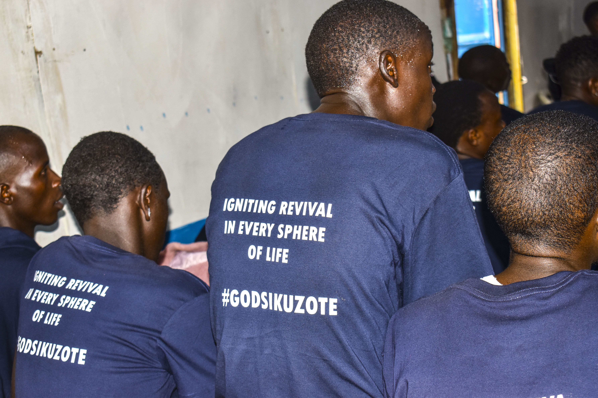
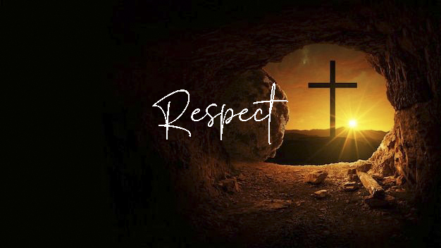
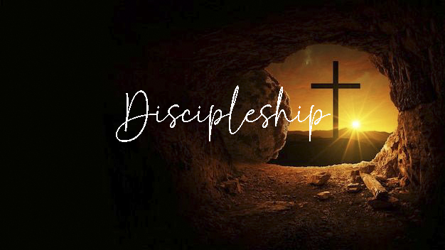
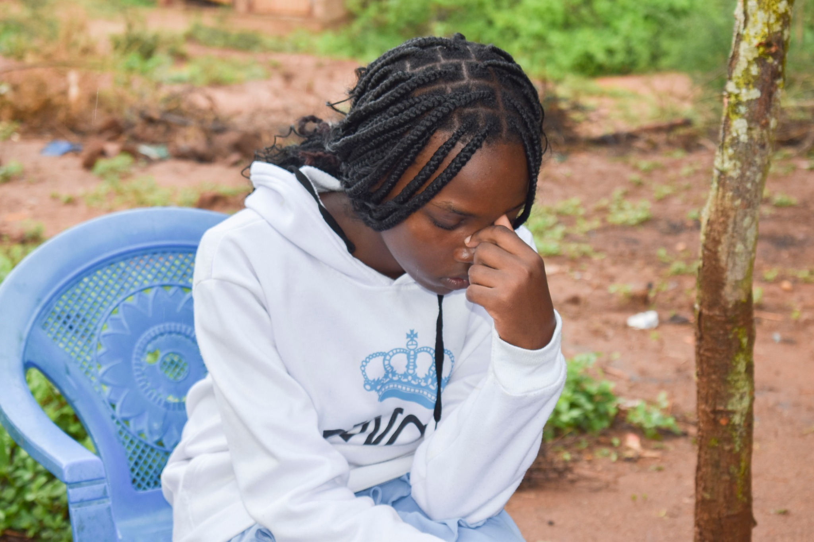
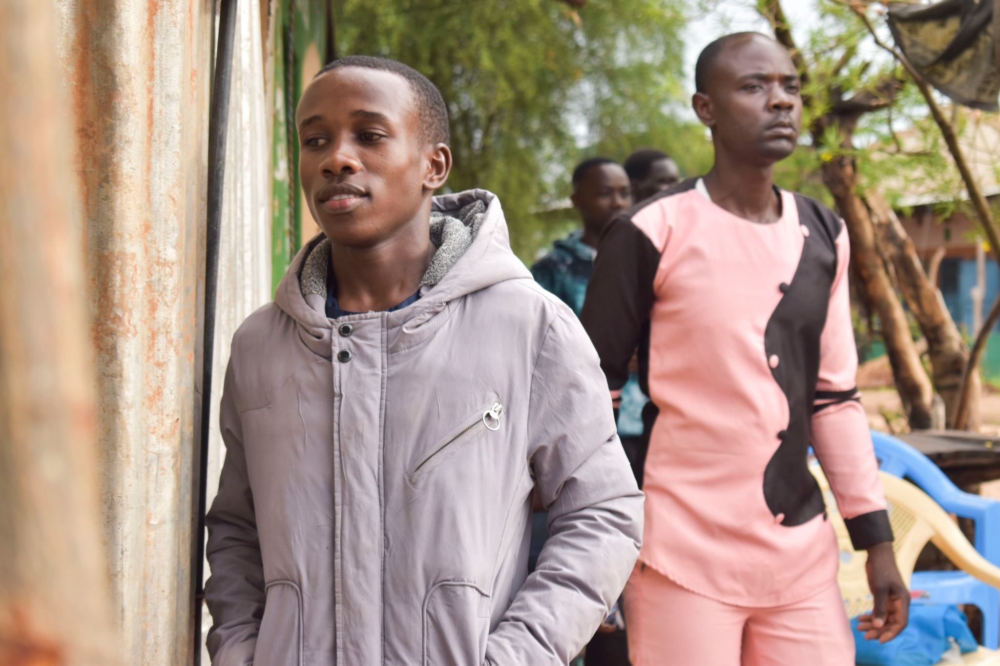
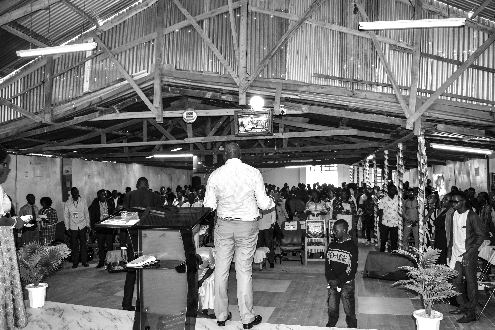
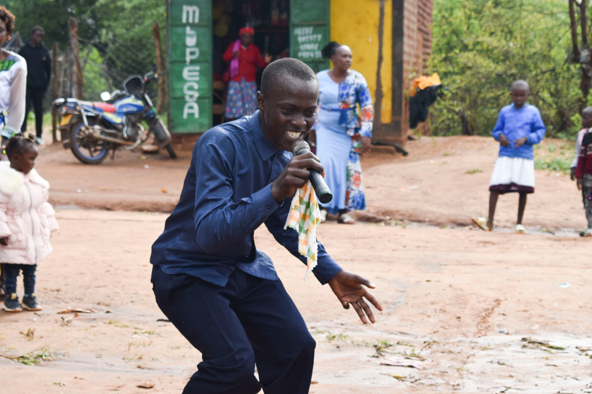
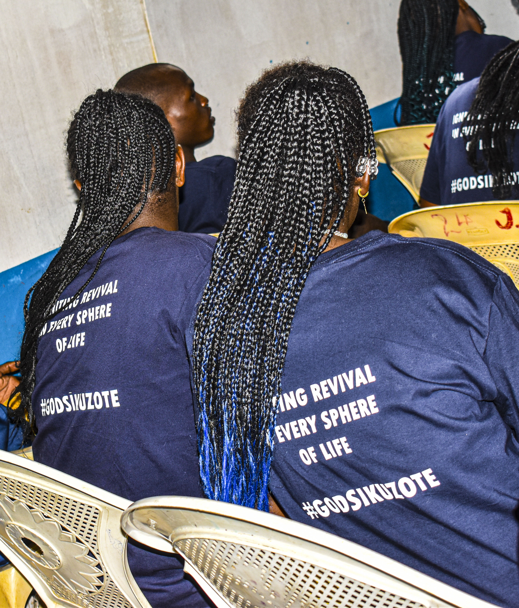

Jesus Healing Sanctuary Ministries
Jesus Healing Sanctuary Ministries
Jesus Healing Sanctuary Ministries
Jesus Healing Sanctuary Ministries
Igniting Revival In Every Sphere of Life

Generation of Fire is the youth department of our church, dedicated to raising a vibrant generation that is passionate for God and grounded in His Word. We believe that young people are not just the future of the church—they are the now of God’s Kingdom. Our mission is to ignite a burning desire for Christ in the hearts of the youth, empowering them to live boldly for Him in every sphere of life.
Through fellowship, mentorship, discipleship, and outreach, Generation of Fire creates an atmosphere where young people can grow spiritually, discover their God-given purpose, and develop leadership skills that impact their families, communities, and the world. We nurture a culture of worship, prayer, and service, equipping every youth to stand firm in faith and reflect Christ’s love wherever they go.
We not only believe youth are tomorrow’s church — they are also today’s revival.
Guided by visionary youth leaders.
Youth Pastor
Pst Letowon leads Generation of Fire with a passion for seeing young people encounter God's fire. With over 10 years of youth ministry experience, he has dedicated his life to raising a generation that burns for Jesus.
His vision is to create an environment where youth can discover their identity in Christ, develop godly character, and step into their calling with confidence and boldness.
Chairperson
Lydia Boyani is a dedicated, compassionate and God-fearing leader who serves with humility and purpose.She leads by example, encouraging unity, respect and growth among the youth while always putting others before herself. With wisdom, patience and a heart of service she creates a safe and inspiring environment where everyone feels value and motivated to grow in faith and character. Her commitment and leadership continue to positively shape and strengthen our youth group.
Secretary
National Coordinator
Isaac Muimi is a highly organized, committed and visionary leader who oversees all youth branches across the country and plans youth events ensuring every section is well coordinated and fully taken care of. With great attention to detail and a strong sense of responsibility, they ensure smooth communication, effective team work, and excellence in execution.
Treasurer
Fidelis Muthoni is a trustworthy, diligent and responsible leader who faithfully manages the finances of the group with integrity and transparency. They ensure proper budgeting, accountability and wise use of resources supporting all activities and programs effectively. Through their careful stewardship and commitment, they help sustain the vision and smooth running ot the youth finances.
Prayer Coordinator
Bramwel Sifuna oversees creative arts ministries, helping youth discover and develop their artistic gifts for God's glory. Her innovative approach has produced talented young artists, dancers, and performers.
Esther believes that creativity is a powerful way to express worship and communicate God's message, and she mentors youth to use their artistic abilities to impact their generation for Christ.
Built on faith, rooted in purpose.
Loving one another, walking in unity,vcreating a safe and welcoming space for every young person.
Building a deep, personal relationship with God through prayer, worship and the word.

Honouring God,leaders, each other and ourselves through our words, actions and attitudes. We choose kindness, humility and self-control in all relationships.
Serving God, the church and the community with our gifts and talents.
Helping youths discover who they are in Christ and their God-given purpose.

Growing spiritually, emotionally and mentally as we become more like Christ.
Gatherings where young people connect, worship, and grow in their faith together.
Dedicated prayer groups that build on intercession and supplication times that build spiritual strength and unity.
Structured mentoring and Bible study programs that deepen spiritual understanding.
These are weekend long meetings that take place across our branches with an aim of evangelism and bringing youths to church.
Community service and evangelism initiatives that extend God's love to the world.
One-on-one and group mentoring relationships that guide youth in their spiritual journey.








